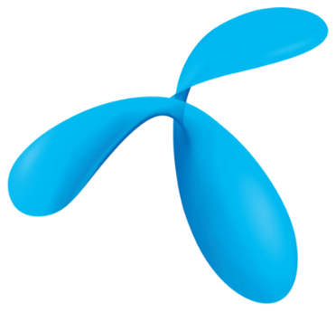

Leksjon 1 av 7
0%
☰
Meny
Fiber & T-We Introduksjon
☰
Meny
Leksjon 1 av 7
🌐
Norsk
⌄
Norsk
English
Deutsch
Español
Polski
Norsk
English
Deutsch
Español
Polski
Din fremgang
0%

KONTAKT
Trenger du hjelp?
Velg om du vil kontakte meg direkte eller Telenor kundeservice.
Kontakt selger
William Zahl
+47 476 66 135
william.zahl@electi.no
Ta kontakt med meg hvis du lurer på noe før du bestemmer deg.
Kontakt Telenor kundeservice
915 09 000
Dersom du har et kundeforhold eller nettopp signert kontrakt, kan du kontakte Telenor kundeservice.
Digital hjelp
💬
Telmi
Åpen chatbot 24/7 - Telenor
Åpne chatbot →